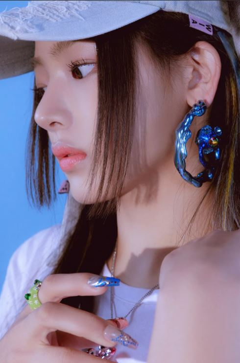

About NewJeans
2022년 7월 22일에 데뷔한 ADOR 소속의 5인조 다국적 걸그룹.
뉴진스 멤버들(우측부터 민지, 하니, 다니엘, 해린, 혜인)
NewJeans characteristic
- 그룹명
- 대중음악은 일상과 초근접해 있는 문화이기 때문에 마치 매일 입는 옷과 같다. 특히 진(Jean)은 시대를 불문해 남녀노소 모두에게 사랑받아 온 아이템이다. 뉴진스(NewJeans)에는 매일 찾게 되고 언제 입어도 질리지 않는 진처럼 시대의 아이콘이 되겠다는 포부와 New Genes가 되겠다는 각오가 담겨 있다.
- 보컬
- 그룹이 추구하는 음악에 완벽히 걸맞은 음색과 음악적 기술을 가지고 있다고 평가 받는다. 전체적으로 팝이나 R&B 스타일에서 두각을 나타낸다.
- 멤버들의 음색이 뛰어나면서도 또 각자 다른 개성이 있어 다른 스타일의 여러 발표곡들이 대중의 사랑을 받는 데에 큰 기여를 하고 있다.
- 댄스
- 멤버들의 전체적인 춤 실력이 매우 뛰어난 편이며, 난이도로 보나 실력으로 보나 4세대 최상위권에 속한다. NewJeans의 곡들이 대부분 힙합 기반의 안무이기에 힘과 유연성을 모두 고려하면서 춰야하는 데다가 넓은 무대에서 돋보이기 위해서는 춤선 또한 부드러워야 한다. 하지만 모든 멤버들이 뒤쳐지지 않고 이를 잘 갖추었기에 담당 안무가가 멤버 개개인의 춤의 개성을 중요시함에도 군무가 전혀 어색하게 느껴지지 않는다.
- 한 댄스 트레이너에 의하면 NewJeans 멤버들은 단순히 기계적으로 칼군무와 짜여진 안무를 수행하는 것이 아니라, 각 멤버마다 힙합 댄스의 기본기가 탄탄하고 리듬감이 뛰어나며 이 부분에 대한 트레이닝이 매우 잘되어 있다고 밝혔다.
- 인기 및 기록
- 데뷔하자마자 뜨거운 관심과 큰 사랑을 받으며 음원이면 음원, 음반이면 음반 각종 부문들에서 대기록과 신기록을 써내려가고 있다. 일각에선 이를 'NewJeans 신드롬'이라고 칭한다.
- 대중, 팬덤뿐만 아니라 업계에서도 큰 관심과 러브콜을 받고 있다. 데뷔가 3개월도 채 되지 않은 상황에서 100여개의 광고 러브콜을 받는가하면, 벌써부터 멤버 개개인이 명품 브랜드 앰버서더를 꿰차는 것 등을 통해 광고, 패션 업계 곳곳에 뻗친 NewJeans의 위상을 엿볼 수 있다.
뉴진스멤버들
뉴진스는 총 5명의 멤버로 이루어져있다
-

- 민지
- 하니
- 다니엘
- 해린
- 혜인